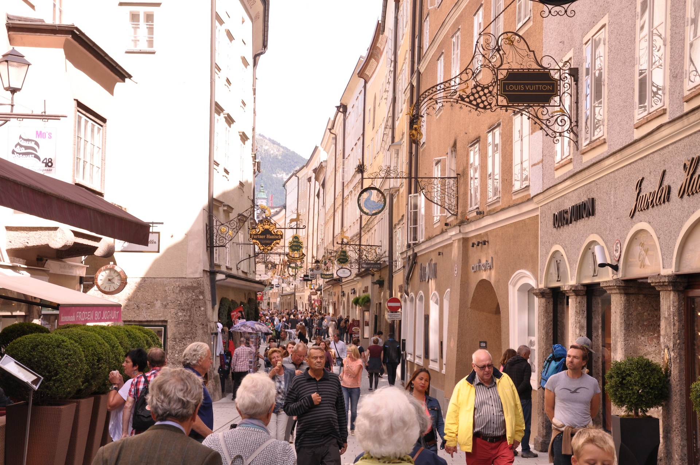
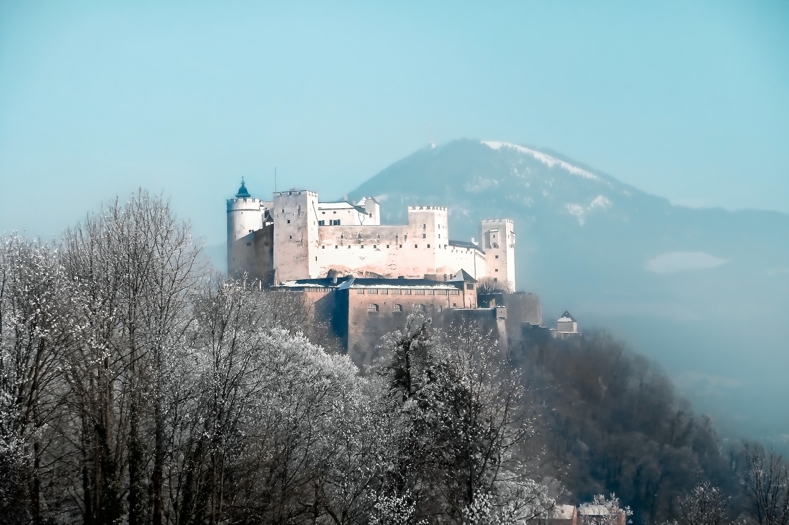
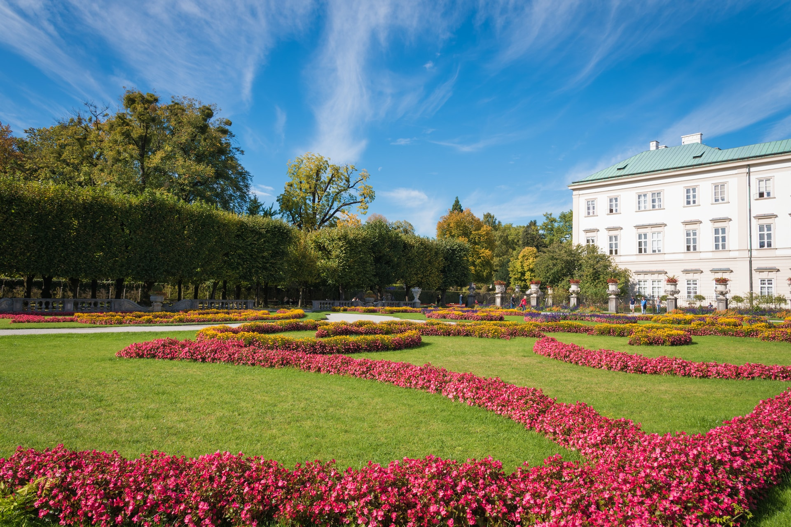
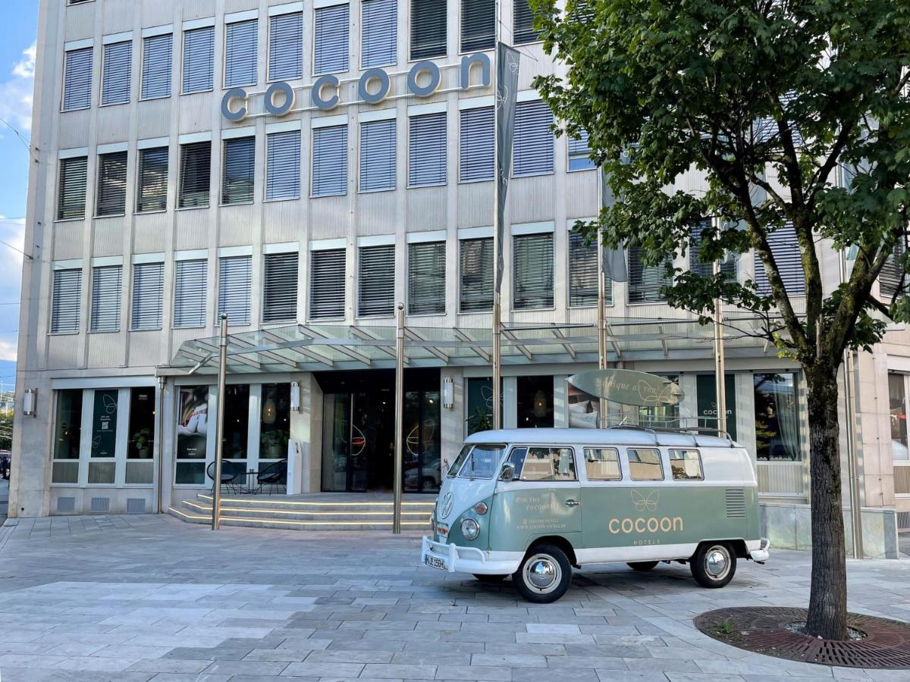

Salzburg
Willkommen in Salzburg!
Welkom in Salzburg, de betoverende stad van muziek en cultuur in Oostenrijk.Gelegen aan de oevers van de rivier de Salzach en omringd door de adembenemende Alpen, is Salzburg een bestemming die je zal charmeren.
Verken de oude binnenstad, die op de Werelderfgoedlijst van UNESCO staat, met zijn prachtige barokke architectuur, geplaveide straten en schilderachtige pleinen.
Bezoek de geboorteplaats van Mozart en leer meer over de beroemde componist in het Mozart Wohnhaus.
Laat je betoveren door het majestueuze slot Hohensalzburg, een van de grootste middeleeuwse kastelen van Europa, en geniet van een adembenemend uitzicht over de stad vanaf de vestingmuren.
Salzburg is ook de thuisbasis van het beroemde Salzburg Festival, een jaarlijks evenement dat internationale artiesten en muziekliefhebbers samenbrengt.
Geniet van klassieke concerten, opera's en theaterstukken op verschillende locaties in de stad.
Ontdek de rijke muzikale erfenis, de prachtige architectuur en de schilderachtige landschappen van Salzburg.
De must-sees van Salzburg
Altstadt
Verlies jezelf in de charme van de Altstadt van Salzburg, een betoverende oude binnenstad die op de Werelderfgoedlijst van UNESCO staat.
Verken de geplaveide straten, bewonder de prachtige barokke architectuur en bezoek de geboorteplaats van Mozart.
Verlies jezelf in de charme van de Altstadt van Salzburg, een betoverende oude binnenstad die op de Werelderfgoedlijst van UNESCO staat.
Verken de geplaveide straten, bewonder de prachtige barokke architectuur en bezoek de geboorteplaats van Mozart.


Slot Hohensalzburg
Bewonder de grandeur van Slot Hohensalzburg, een indrukwekkend middeleeuws kasteel dat hoog boven de stad uittorent.
Verken de prachtige zalen, geniet van adembenemende uitzichten en leer meer over de rijke geschiedenis van dit imposante fort.
Bewonder de grandeur van Slot Hohensalzburg, een indrukwekkend middeleeuws kasteel dat hoog boven de stad uittorent.
Verken de prachtige zalen, geniet van adembenemende uitzichten en leer meer over de rijke geschiedenis van dit imposante fort.
Mirabell
Betreed de betoverende wereld van het Mirabell Paleis en de prachtige tuinen.
Wandel door de goed onderhouden bloembedden, bewonder de fonteinen en geniet van de elegante barokke architectuur.
Een perfecte plek om te ontspannen en te genieten van de schoonheid van Salzburg.
Betreed de betoverende wereld van het Mirabell Paleis en de prachtige tuinen.
Wandel door de goed onderhouden bloembedden, bewonder de fonteinen en geniet van de elegante barokke architectuur.
Een perfecte plek om te ontspannen en te genieten van de schoonheid van Salzburg.

Accommodatie
Tijdens je verblijf logeer je in het Hotel Cocoon Salzburg.
Cocoon Salzburg ligt in Salzburg, op 200 meter van het centraal station van Salzburg, en beschikt over een bar, anti-allergene kamers en gratis WiFi in alle ruimtes.
Deze accommodatie ligt op korte afstand van bezienswaardigheden zoals de Getreidegasse, de kathedraal van Salzburg en het Festspielhaus Salzburg.
Voor een drankje kunt u terecht in de snackbar.
Cocoon Salzburg ligt in Salzburg, op 200 meter van het centraal station van Salzburg, en beschikt over een bar, anti-allergene kamers en gratis WiFi in alle ruimtes.
Deze accommodatie ligt op korte afstand van bezienswaardigheden zoals de Getreidegasse, de kathedraal van Salzburg en het Festspielhaus Salzburg.
Voor een drankje kunt u terecht in de snackbar.

De treinreis

Salzburg is makkelijk bereikbaar met de comfortabele ICE- en Railjet-treinen.
Onderweg heeft u twee overstappen: in Frankfurt am Main en München.
Voor de heenreis hebt u de volgende reisopties:
Voor de terugreis hebt u de volgende reisopties:
Onderweg heeft u twee overstappen: in Frankfurt am Main en München.
Voor de heenreis hebt u de volgende reisopties:
- Vertrek in Brussel-Zuid om 06:23, aankomst in Salzburg om 14:58.
- Vertrek in Brussel-Zuid om 08:23, aankomst in Salzburg om 16:58.
- Vertrek in Brussel-Zuid om 10:25, aankomst in Salzburg om 18:58.
- Vertrek in Brussel-Zuid om 12:25, aankomst in Salzburg om 21:00.
- Vertrek in Brussel-Zuid om 14:25, aankomst in Salzburg om 23:37.
Voor de terugreis hebt u de volgende reisopties:
- Vertrek in Salzburg om 06:40, aankomst in Brussel-Zuid om 15:35.
- Vertrek in Salzburg om 09:00, aankomst in Brussel-Zuid om 17:35.
- Vertrek in Salzburg om 11:00, aankomst in Brussel-Zuid om 19:35.
- Vertrek in Salzburg om 13:00, aankomst in Brussel-Zuid om 21:35.
Prijzen
Deze reis is beschikbaar vanaf €550,- per persoon.Inbegrepen in de prijs zijn de heen- en terugreis, 3 overnachtingen ter plaatse inclusief ontbijt en BTW.
Op verzoek kan de reisduur steeds uitgebreid of ingekort worden.
Boek je reis via ons boekingsformulier en wij sturen je zo snel mogelijk een reisvoorstel.